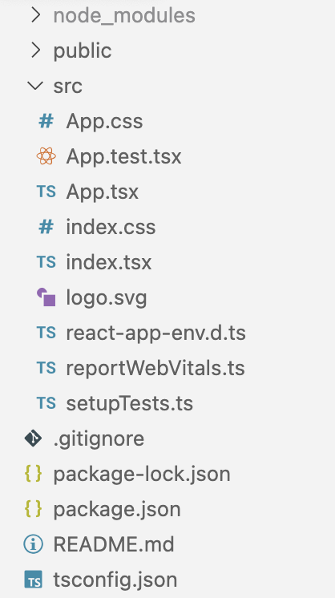

How React can be used
Create React App (CRA) is the most popular toolchain to build client-side rendered React apps.
In contrast, full-featured frameworks (e.g. Next.js, Remix) provide advanced rendering mechanisms like server-side rendering (SSR) and static site generation (SSG).
For our demo app, we will use Create React App.
We will talk about full-featured frameworks and when to use them later.
Create React App
$ npx create-react-app your-app-name
--template typescript
What is all this stuff?

JSX
const header = Hello World
;
const header = React.createElement(
'h1', {}, 'Hello World'
);
Babel transpiles exactly like this.
JSX
You can use any JS expression within curly braces.
JSX
JSX is an expression too.
function getGreeting(user) {
if (user) {
return Hello, {formatName(user)}
;
}
return Hello, stranger
;
}
JSX
JSX uses camelCase for most DOM element attributes, e.g. stroke-width becomes strokeWidth
JSX
Inline styles can be applied using object notation:
The outer pair of curly braces belongs to JSX, while the inner pair comes from the object notation of JavaScript.
TypeScript
We will be using TypeScript because we highly recommend using it in enterprise projects.
With Create React App Typescript is supported out of the box:
--template typescript
NPM scripts
npm start
Starts the app in dev mode with a hot reload server. The build will fail if you have TypeScript errors.
npm run build
Creates a production build of your app and puts it into in the build folder.
npm test
Runs your tests using jest and react-testing-library
npm run eject
You may have noticed that there is no webpack config visible. This is hidden from you when using Create React App (convention over configuration).
In most cases, this will be fine. If you need to make custom changes to the config, you can eject.
This cannot be undone and you lose Create React App support.
CI setup
On the CI, you will typically run at least these scripts:
- npm test
- npm run build
ESLint
ESLint is a tool that statically analyzes your code to discover potential problems (linting).
Create React App comes with ESLint built-in. Problems are shown in the terminal.
Recommendation: Install the VS Code plugin for ESLint for highlighting and fix assistance in the editor.
Linting on CI
ESLint is also run as part of npm run build.
In case of errors, the build fails.
On CI environments, warnings are treated like errors to ensure a clean production build.
(Ensure that the environment variable CI is set to true for this to work.)
React Developer Tools
React has wonderful dev tools which the core team maintains.
They're available for both Chromium-based browsers and Firefox.
- Explore React app like a DOM tree
- Modify state and props on the fly
- Tease out performance problems
- Programmatically manipulate components

Demo App
This is the app we will build within this course.
It is based on the open PokeAPI.
Codesandbox DemoRecap
We learned…
- How React can be used
- How to Create React App (CRA)
- What the JSX syntax is
- Which npm scripts are available in CRA